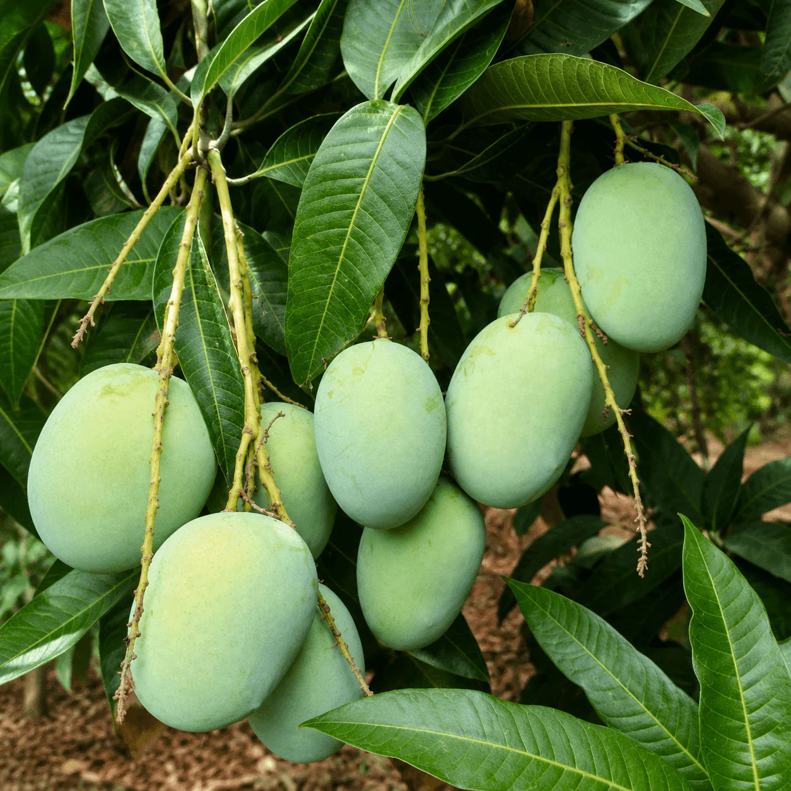

Dudhiya Maldah
दूधिया मालदह (Dudhiya Maldah)
The undisputed King of Mangoes in Bihar, legendary for its unique milky aroma, exceptionally thin skin, and melt-in-the-mouth pulp texture.
Highly prized cultivar exclusively originating from the fertile gangetic tracts of Digha, Patna.

Scan QR Code
⚖️ Variety Comparison: Nutritional Profile
| Variety | TSS (°Brix) | Glycemic Index (GI) |
|---|---|---|
| Dudhiya Maldah (Current Selection) | 21.25 | 51 |
| Alphonso (Commercial Benchmark) | 21.0 | |
| Kesar (Commercial Benchmark) | 20.0 | 53 |
| Dashehari (Commercial Benchmark) | 19.0 | 54 |
| Totapuri (Commercial Benchmark) | 16.0 | 51 |
* Parameters compiled from standard regional performance targets.
📊 TSS (°Brix) & Glycemic Index Comparison Analysis
🟢 Low GI (≤50)
🟡 Moderate GI (51–55)
🔴 High GI (>55)
Health Insight:
Dudhiya Maldah demonstrates a moderate Glycemic Index (GI 51) while maintaining a high Total Soluble Solids (21.25 °Brix), indicating an excellent balance of sweetness and controlled sugar release compared with commercial benchmark cultivars.